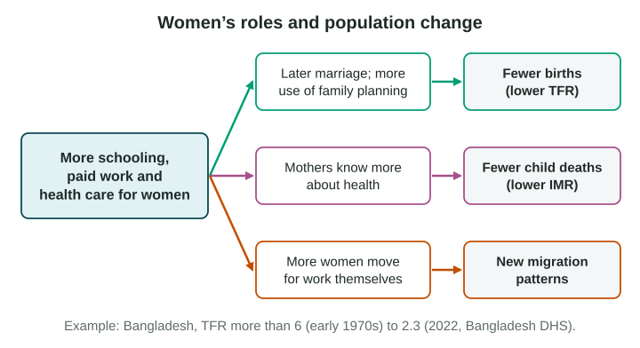

Population change is not only about numbers. It is about people’s lives, and in particular the lives of women. When women’s roles change, birth rates, death rates and migration all change too.
Women’s roles and fertility

Female education means the schooling that girls and women receive. It is one of the strongest forces linked to lower fertility, through several links:
- Later marriage. Girls who stay in school marry and have their first child later, which leaves fewer years for childbearing.
- Paid work. Women with more schooling can earn more. Leaving a job to raise many children costs more.
- Family planning. Women with more schooling know more about contraception and use it more.
- Child survival. When fewer children die, families need fewer births to reach the family size they want.
Two real cases:
- Bangladesh. From the 1980s, millions of young women took jobs in garment factories in Dhaka and other cities, girls’ schooling spread and family planning workers visited villages. The TFR fell from more than 6 in the early 1970s to 2.3 in 2022 (Bangladesh Demographic and Health Survey, 2022).
- Kerala, India. A state where most girls finish school, Kerala has a TFR below replacement (National Family Health Survey, 2019-21), far lower than states in India’s north.
These forces work together, so it is hard to say which matters most. A scatter plot of countries shows that more years of school for women goes with fewer children per woman, but a pattern across countries does not prove one cause.
Women’s roles and mortality
Children of mothers with more schooling are less likely to die before age 5 in most countries. Mothers who have been to school tend to know more about clean water, nutrition and vaccines, and use clinics more. Better health care for women during pregnancy and birth also lowers deaths of mothers.
Women and migration: Ravenstein’s laws
In 1885 and 1889, the geographer E. G. Ravenstein studied British census data and wrote down patterns he called Ravenstein’s laws of migration:
- Most migrants move only a short distance.
- Many move in steps, from village to town to city.
- Long-distance migrants usually head for large cities.
- Each flow produces a smaller flow back (a counterflow).
- People from the countryside move more than people from towns.
- Within their own country, women move more than men; men more often move long distances and abroad.
- Most migrants are adults, and most move for economic reasons.
In Ravenstein’s Britain, many young women moved to nearby towns to work as servants or in textile mills, while men more often took long-distance work or sailed abroad.
How well do the laws fit now?
The laws are a model built from one country in one century.
- Strengths. Many patterns still hold: most moves are short, cities draw migrants, and flows have counterflows.
- Limits. Air travel and phones make long-distance and international moves far more common. Women now often migrate abroad on their own: many nurses and care workers from the Philippines are women. The laws also say little about people forced to flee war or disaster.
When you use Ravenstein, name the law, apply it to a real place and give one way the case differs from the 1880s.